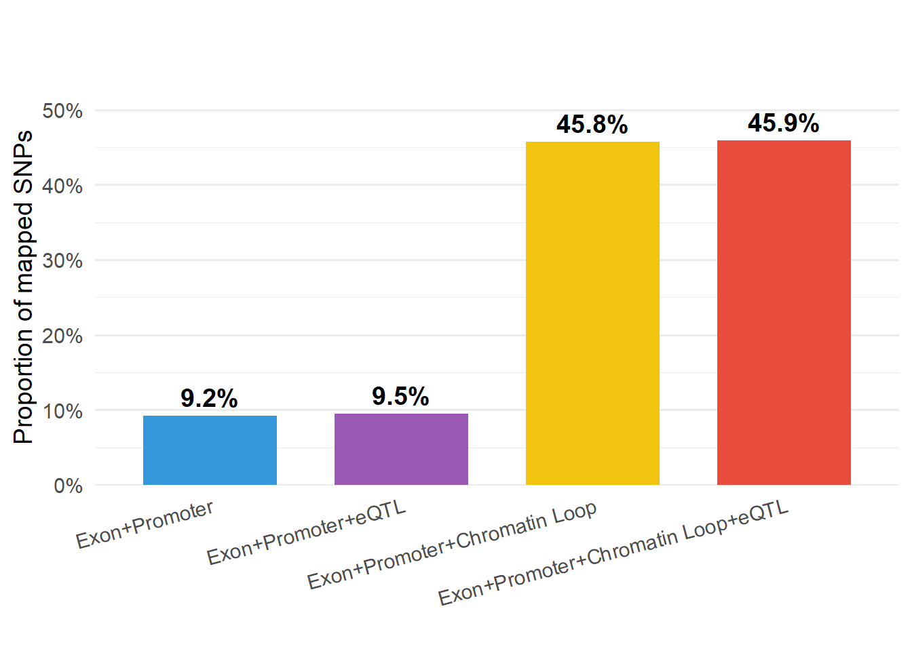
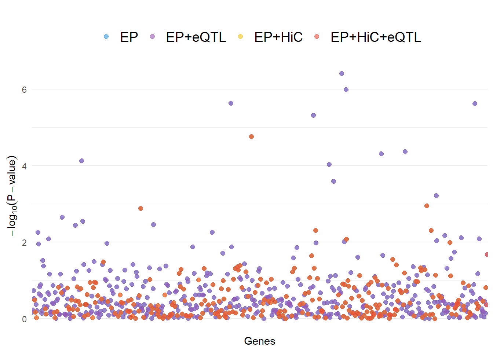
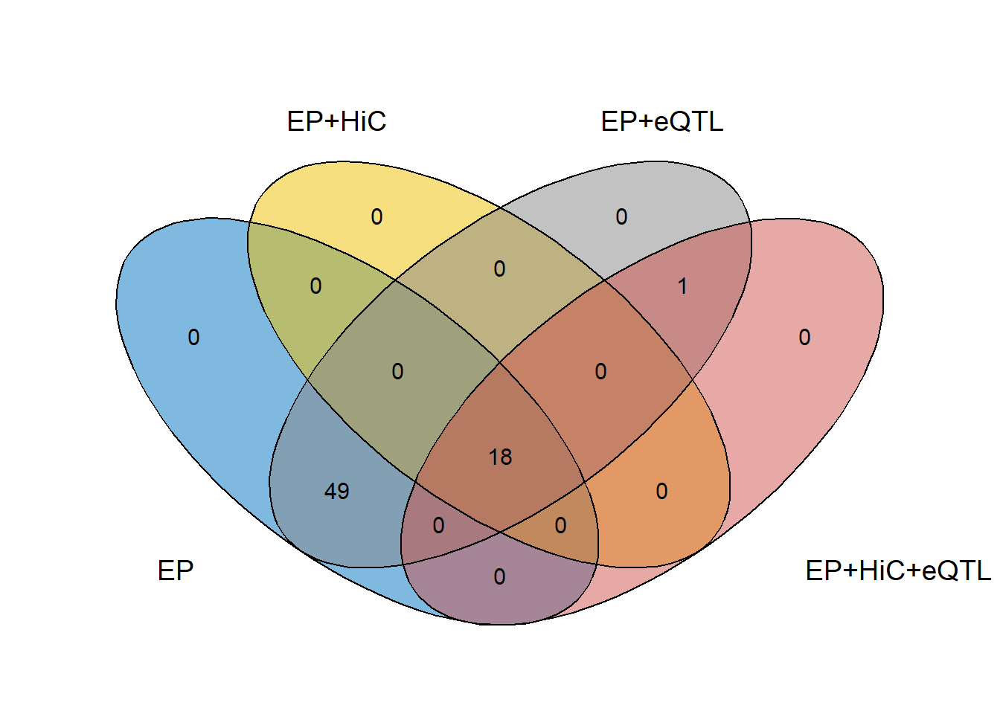
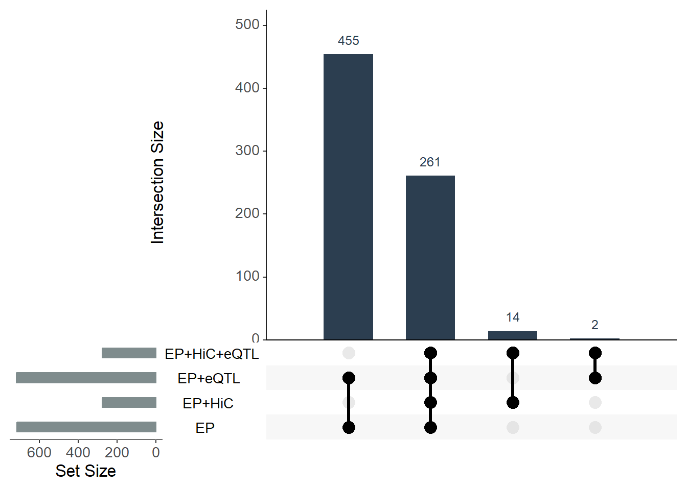

Last updated: 2026-04-28
Checks: 6 1
Knit directory: BreastCancerEpigenetics/
This reproducible R Markdown analysis was created with workflowr (version 1.7.1). The Checks tab describes the reproducibility checks that were applied when the results were created. The Past versions tab lists the development history.
The R Markdown is untracked by Git. To know which version of the R
Markdown file created these results, you’ll want to first commit it to
the Git repo. If you’re still working on the analysis, you can ignore
this warning. When you’re finished, you can run
wflow_publish to commit the R Markdown file and build the
HTML.
Great job! The global environment was empty. Objects defined in the global environment can affect the analysis in your R Markdown file in unknown ways. For reproduciblity it’s best to always run the code in an empty environment.
The command set.seed(20240919) was run prior to running
the code in the R Markdown file. Setting a seed ensures that any results
that rely on randomness, e.g. subsampling or permutations, are
reproducible.
Great job! Recording the operating system, R version, and package versions is critical for reproducibility.
Nice! There were no cached chunks for this analysis, so you can be confident that you successfully produced the results during this run.
Great job! Using relative paths to the files within your workflowr project makes it easier to run your code on other machines.
Great! You are using Git for version control. Tracking code development and connecting the code version to the results is critical for reproducibility.
The results in this page were generated with repository version d1df81c. See the Past versions tab to see a history of the changes made to the R Markdown and HTML files.
Note that you need to be careful to ensure that all relevant files for
the analysis have been committed to Git prior to generating the results
(you can use wflow_publish or
wflow_git_commit). workflowr only checks the R Markdown
file, but you know if there are other scripts or data files that it
depends on. Below is the status of the Git repository when the results
were generated:
Untracked files:
Untracked: analysis/BC_magma_hic_eQTL.Rmd
Untracked: analysis/BC_magma_hic_eQTL_comparisons.Rmd
Unstaged changes:
Modified: analysis/BC_magma.Rmd
Modified: analysis/BC_magma_hic.Rmd
Modified: analysis/index.Rmd
Note that any generated files, e.g. HTML, png, CSS, etc., are not included in this status report because it is ok for generated content to have uncommitted changes.
There are no past versions. Publish this analysis with
wflow_publish() to start tracking its development.
rm(list=ls())
set.seed(123)
options(stringsAsFactors=F)
library(GenomicRanges)
library(biomaRt)
library(dplyr)# Load libraries
library(ggplot2)
library(scales)
# 1. Create the data frame
total_snps <- 9822123
plot_data <- data.frame(
input_data = c("Exon+Promoter",
"Exon+Promoter+eQTL",
"Exon+Promoter+Chromatin Loop",
"Exon+Promoter+Chromatin Loop+eQTL"),
num_mapped_snps = c(905755, 934412, 4494800, 4504842)
)
# 2. Calculate proportions
plot_data$proportion <- plot_data$num_mapped_snps / total_snps
# 3. Sort the data by proportion for the plot
plot_data <- plot_data[order(plot_data$proportion), ]
plot_data$input_data <- factor(plot_data$input_data, levels = plot_data$input_data)
# 4. Create the bar plot
p <- ggplot(plot_data, aes(x = input_data, y = proportion, fill = input_data)) +
geom_bar(stat = "identity", width = 0.7, show.legend = FALSE) +
# Add percentage labels over the bars
geom_text(aes(label = percent(proportion, accuracy = 0.1)),
vjust = -0.5,
size = 5,
fontface = "bold") +
# Custom aesthetic styling
scale_y_continuous(labels = percent_format(), expand = expansion(mult = c(0, 0.15))) +
scale_fill_manual(values = c("#3498db", "#9b59b6", "#f1c40f", "#e74c3c")) +
labs(title = "",
subtitle = "",
x = "",
y = "Proportion of mapped SNPs") +
theme_minimal(base_size = 14) +
theme(
plot.title = element_text(face = "bold", size = 16),
axis.text.x = element_text(angle = 15, hjust = 1),
panel.grid.major.x = element_blank()
)
# View the plot
print(p)
# ggsave("snp_mapping_plot.png", plot = p, width = 8, height = 6, dpi = 300)library(dplyr)
library(ggplot2)
library(tidyr)
path2="C:\\han\\Projects\\2025_03_breast_cancer\\Run_MAGMA_on_GWAS_HiC_eQTL\\"
# 1. Define paths to your output files
# Note: MAGMA output files usually end in .genes.out
folders <- paste0(path2, c("magma_output_exome_promoter",
"magma_output_exome_promoter_eQTL",
"magma_output_exome_promoter_HiC",
"magma_output_exome_promoter_HiC_eQTL"))
exome_promoter_output=as_tibble(read.table(paste0(folders[1], "\\.genes.out.txt"), header = T))
exome_promoter_eQTL_output=as_tibble(read.table(paste0(folders[2], "\\.genes.out.txt"), header = T))
exome_promoter_HiC_output=as_tibble(read.table(paste0(folders[3], "\\.genes.out.txt"), header = T))
exome_promoter_HiC_eQTL_output=as_tibble(read.table(paste0(folders[4], "\\.genes.out.txt"), header = T))exome_promoter_output$Strategy <- "EP"
exome_promoter_eQTL_output$Strategy <- "EP+eQTL"
exome_promoter_HiC_output$Strategy <- "EP+HiC"
exome_promoter_HiC_eQTL_output$Strategy <- "EP+HiC+eQTL"
# 2. Stack them on top of each other (Row bind)
# This uses your full variable names from the previous chunk
plot_data <- bind_rows(exome_promoter_output,
exome_promoter_eQTL_output,
exome_promoter_HiC_output,
exome_promoter_HiC_eQTL_output)
# 3. Plot using GENE as the X-axis
# Note: Ensure 'Strategy' names in scale_color_manual match the labels above
ggplot(plot_data, aes(x = GENE, y = -log10(P), color = Strategy)) +
geom_point(size = 2, alpha = 0.6) +
scale_color_manual(values = c("EP" = "#3498db",
"EP+HiC" = "#f1c40f",
"EP+eQTL" = "#9b59b6",
"EP+HiC+eQTL" = "#e74c3c")) +
theme_minimal() +
theme(
axis.text.x = element_blank(), # Hides the messy gene names
axis.ticks.x = element_blank(),
panel.grid.major.x = element_blank(),
legend.position = "top",
legend.title = element_blank(),
# Increase this number to make text even larger
legend.text = element_text(size = 14)
) +
labs(
title = "",
x = "Genes",
y = expression(-log[10](P-value))
)
# Load necessary libraries
library(dplyr)
library(tidyr)
library(biomaRt) # To convert ENSG to Gene Symbols
path2="C:\\han\\Projects\\2025_03_breast_cancer\\Run_MAGMA_on_GWAS_HiC_eQTL\\"
# 1. Define paths to your output files
# Note: MAGMA output files usually end in .genes.out
folders <- paste0(path2, c("magma_output_exome_promoter",
"magma_output_exome_promoter_eQTL",
"magma_output_exome_promoter_HiC",
"magma_output_exome_promoter_HiC_eQTL"))
# 1. Load MAGMA gene-level output files
ep_data <- as_tibble(read.table(paste0(folders[1], "\\.genes.out.txt"), header = T))
hic_data <- as_tibble(read.table(paste0(folders[3], "\\.genes.out.txt"), header = T))
eqtl_data <- as_tibble(read.table(paste0(folders[2], "\\.genes.out.txt"), header = T))
full_data <- as_tibble(read.table(paste0(folders[4], "\\.genes.out.txt"), header = T))
# 2. Select only Gene ID and P-value, then rename P for merging
ep_p <- ep_data %>% dplyr::select(GENE, P_EP = P)
hic_p <- hic_data %>% dplyr::select(GENE, P_HiC = P)
eqtl_p <- eqtl_data %>% dplyr::select(GENE, P_eQTL = P)
full_p <- full_data %>% dplyr::select(GENE, P_Full = P)
# 3. Merge all models into one comparison table
comparison_table <- ep_p %>%
inner_join(hic_p, by = "GENE") %>%
inner_join(eqtl_p, by = "GENE") %>%
inner_join(full_p, by = "GENE")
comparison_table# A tibble: 261 × 5
GENE P_EP P_HiC P_eQTL P_Full
<chr> <dbl> <dbl> <dbl> <dbl>
1 ENSG00000269981 0.324 0.324 0.324 0.324
2 ENSG00000222623 0.0646 0.0646 0.0646 0.0646
3 ENSG00000237094 0.0916 0.0916 0.0916 0.0916
4 ENSG00000230021 0.895 0.895 0.895 0.895
5 ENSG00000269308 0.509 0.509 0.509 0.509
6 ENSG00000229571 0.738 0.738 0.738 0.738
7 ENSG00000204503 0.655 0.655 0.655 0.655
8 ENSG00000237847 0.115 0.115 0.115 0.115
9 ENSG00000174876 0.877 0.877 0.877 0.877
10 ENSG00000238122 0.35 0.35 0.35 0.35
# ℹ 251 more rows# 4. Map Ensembl IDs to Gene Symbols (Requires internet connection)
mart <- useMart("ensembl", dataset = "hsapiens_gene_ensembl")
gene_map <- getBM(attributes = c("ensembl_gene_id", "external_gene_name"),
filters = "ensembl_gene_id",
values = comparison_table$GENE,
mart = mart)
# Join names back to p-values
final_results <- comparison_table %>%
left_join(gene_map, by = c("GENE" = "ensembl_gene_id")) %>%
dplyr::select(GENE, external_gene_name, everything())
# 5. Example 1: Find "True Risk Genes" (Integrated Model is the most significant)
# These are genes where adding 3D/eQTL data strengthened the signal
true_risk <- final_results %>%
filter(P_Full < P_EP) %>%
arrange(P_Full)
# 6. Example 2: Find "False Positives" (Proximity-based signal was diluted)
# These are genes where linear proximity (EP) was significant but Full model dropped it
diluted_signal <- final_results %>%
filter(P_Full > P_EP) %>%
arrange(desc(P_Full))
# 7. Print specific genes
check_list <- c("ENSG00000106123", "ENSG00000183395", "ENSG00000139618")
print(final_results %>% filter(GENE %in% check_list))# A tibble: 0 × 6
# ℹ 6 variables: GENE <chr>, external_gene_name <chr>, P_EP <dbl>, P_HiC <dbl>,
# P_eQTL <dbl>, P_Full <dbl># 8. Save results to CSV
#write.csv(final_results, "MAGMA_Model_Comparison_Pvalues.csv", row.names = FALSE)# 2. Use full_join to keep ALL genes from ALL files
# This will create NA values for genes missing in a specific model
comparison_table <- ep_p %>%
full_join(hic_p, by = "GENE") %>%
full_join(eqtl_p, by = "GENE") %>%
full_join(full_p, by = "GENE")
# 3. Create a helper column to count how many models each gene appeared in
comparison_table <- comparison_table %>%
mutate(Model_Count = rowSums(!is.na(dplyr::select(., starts_with("P_")))))
# 4. Classify genes based on your requirements
# Category A: Genes unique to the Integrated (Full) Model
# (These were NOT found by proximity/EP, only by 3D+eQTL)
unique_to_full <- comparison_table %>%
filter(!is.na(P_Full) & is.na(P_EP))
# Category B: Genes unique to the Traditional (EP) Model
# (These disappeared when you added functional data - likely false positives)
unique_to_ep <- comparison_table %>%
filter(!is.na(P_EP) & is.na(P_Full))
# Category C: Genes found in exactly TWO models
found_in_two <- comparison_table %>%
filter(Model_Count == 2)
# 5. Summary statistics
print(paste("Total unique genes found across all models:", nrow(comparison_table)))[1] "Total unique genes found across all models: 732"print(paste("Genes found in all 4 models:", sum(comparison_table$Model_Count == 4)))[1] "Genes found in all 4 models: 261"print(paste("Genes found ONLY in the Integrated model:", nrow(unique_to_full)))[1] "Genes found ONLY in the Integrated model: 16"# 6. Save the complete list (including NAs)
#write.csv(comparison_table, "Comprehensive_Gene_Comparison.csv", row.names = FALSE)# 1. Load libraries
# install.packages("ggvenn") # Run this if you don't have the package
library(ggvenn)
library(dplyr)
library(ggplot2)
# 2. Extract significant Gene IDs (P < 0.05) for each model
# We filter each column separately to find the significant subset
sig_list <- list(
EP = comparison_table %>% filter(P_EP < 0.05) %>% pull(GENE),
`EP+HiC` = comparison_table %>% filter(P_HiC < 0.05) %>% pull(GENE),
`EP+eQTL` = comparison_table %>% filter(P_eQTL < 0.05) %>% pull(GENE),
`EP+HiC+eQTL` = comparison_table %>% filter(P_Full < 0.05) %>% pull(GENE)
)
# 2. Generate the plot
ggvenn(
sig_list,
fill_color = c("#0073C2FF", "#EFC000FF", "#868686FF", "#CD534CFF"),
stroke_size = 0.5,
set_name_size = 5,
text_size = 4,
show_percentage = FALSE
) +
# This manually expands the X and Y scales by 20% to prevent text clipping
scale_x_continuous(expand = expansion(mult = 0.1)) +
scale_y_continuous(expand = expansion(mult = 0.1)) +
# Ensure the labels are allowed to be drawn outside the panel
coord_cartesian(clip = "off") +
theme(
plot.margin = margin(20, 20, 20, 20), # Extra space around the edges
plot.title = element_text(hjust = 0.5, size = 16, face = "bold")
) +
labs(title = "")
# 3. Save with enough dimensions to avoid squeezing
#ggsave("Venn_Significant_Genes.png", width = 8, height = 8, dpi = 300)
setdiff(sig_list$EP, sig_list$`EP+HiC+eQTL`) [1] "ENSG00000200344" "ENSG00000243749" "ENSG00000272226" "ENSG00000234497"
[5] "ENSG00000212601" "ENSG00000206832" "ENSG00000236887" "ENSG00000224690"
[9] "ENSG00000232536" "ENSG00000271748" "ENSG00000232519" "ENSG00000228538"
[13] "ENSG00000230274" "ENSG00000263651" "ENSG00000251804" "ENSG00000264146"
[17] "ENSG00000251356" "ENSG00000199944" "ENSG00000086232" "ENSG00000213700"
[21] "ENSG00000266344" "ENSG00000253068" "ENSG00000254732" "ENSG00000162231"
[25] "ENSG00000252709" "ENSG00000254990" "ENSG00000254450" "ENSG00000118137"
[29] "ENSG00000196531" "ENSG00000257604" "ENSG00000221560" "ENSG00000102468"
[33] "ENSG00000102531" "ENSG00000242135" "ENSG00000080824" "ENSG00000270108"
[37] "ENSG00000260274" "ENSG00000182511" "ENSG00000260494" "ENSG00000175938"
[41] "ENSG00000183011" "ENSG00000266356" "ENSG00000267340" "ENSG00000265298"
[45] "ENSG00000182687" "ENSG00000267783" "ENSG00000269181" "ENSG00000268457"
[49] "ENSG00000221039"sig_list$`EP+HiC+eQTL` [1] "ENSG00000235398" "ENSG00000268074" "ENSG00000251738" "ENSG00000233275"
[5] "ENSG00000227120" "ENSG00000265577" "ENSG00000251634" "ENSG00000242607"
[9] "ENSG00000233451" "ENSG00000250946" "ENSG00000255184" "ENSG00000207811"
[13] "ENSG00000200072" "ENSG00000233917" "ENSG00000265047" "ENSG00000261515"
[17] "ENSG00000261782" "ENSG00000265821" "ENSG00000278023" #install.packages("UpSetR")
library(UpSetR)
library(dplyr)
# 1. Prepare the data list: extract genes with valid P-values for each model
gene_list <- list(
EP = comparison_table$GENE[!is.na(comparison_table$P_EP)],
`EP+HiC` = comparison_table$GENE[!is.na(comparison_table$P_HiC)],
`EP+eQTL` = comparison_table$GENE[!is.na(comparison_table$P_eQTL)],
`EP+HiC+eQTL` = comparison_table$GENE[!is.na(comparison_table$P_Full)]
)
# 2. Generate the UpSet Plot
upset(fromList(gene_list),
sets = c("EP", "EP+HiC", "EP+eQTL", "EP+HiC+eQTL"),
keep.order = TRUE, # Keep the sets in the order specified
main.bar.color = "#2c3e50", # Color for intersection bars
sets.bar.color = "#7f8c8d", # Color for set size bars
matrix.color = "black", # Color for the dots/lines
text.scale = 1.5, # Increase text size for readability
order.by = "freq", # Show largest intersections first
point.size = 4,
line.size = 1.2)
sessionInfo()R version 4.4.0 (2024-04-24 ucrt)
Platform: x86_64-w64-mingw32/x64
Running under: Windows 11 x64 (build 26200)
Matrix products: default
locale:
[1] LC_COLLATE=English_United States.utf8
[2] LC_CTYPE=English_United States.utf8
[3] LC_MONETARY=English_United States.utf8
[4] LC_NUMERIC=C
[5] LC_TIME=English_United States.utf8
time zone: America/Chicago
tzcode source: internal
attached base packages:
[1] grid stats4 stats graphics grDevices utils datasets
[8] methods base
other attached packages:
[1] UpSetR_1.4.0 ggvenn_0.1.10 tidyr_1.3.1
[4] scales_1.3.0 ggplot2_3.5.1 dplyr_1.1.4
[7] biomaRt_2.60.1 GenomicRanges_1.56.2 GenomeInfoDb_1.40.0
[10] IRanges_2.38.0 S4Vectors_0.42.0 BiocGenerics_0.50.0
loaded via a namespace (and not attached):
[1] KEGGREST_1.44.0 gtable_0.3.5 xfun_0.43
[4] bslib_0.7.0 httr2_1.0.1 Biobase_2.64.0
[7] vctrs_0.6.5 tools_4.4.0 generics_0.1.3
[10] curl_5.2.1 tibble_3.2.1 fansi_1.0.6
[13] AnnotationDbi_1.66.0 RSQLite_2.3.6 highr_0.10
[16] blob_1.2.4 pkgconfig_2.0.3 dbplyr_2.5.0
[19] lifecycle_1.0.4 GenomeInfoDbData_1.2.12 farver_2.1.2
[22] compiler_4.4.0 stringr_1.5.1 git2r_0.33.0
[25] Biostrings_2.72.0 progress_1.2.3 munsell_0.5.1
[28] httpuv_1.6.15 htmltools_0.5.8.1 sass_0.4.9
[31] yaml_2.3.8 later_1.3.2 pillar_1.9.0
[34] crayon_1.5.2 jquerylib_0.1.4 cachem_1.0.8
[37] tidyselect_1.2.1 digest_0.6.35 stringi_1.8.4
[40] purrr_1.0.2 labeling_0.4.3 rprojroot_2.0.4
[43] fastmap_1.1.1 colorspace_2.1-0 cli_3.6.2
[46] magrittr_2.0.3 utf8_1.2.4 withr_3.0.0
[49] filelock_1.0.3 prettyunits_1.2.0 UCSC.utils_1.0.0
[52] promises_1.3.0 rappdirs_0.3.3 bit64_4.0.5
[55] rmarkdown_2.26 XVector_0.44.0 httr_1.4.7
[58] bit_4.0.5 gridExtra_2.3 workflowr_1.7.1
[61] png_0.1-8 hms_1.1.3 memoise_2.0.1
[64] evaluate_0.23 knitr_1.46 BiocFileCache_2.12.0
[67] rlang_1.1.3 Rcpp_1.0.12 glue_1.7.0
[70] DBI_1.2.3 xml2_1.3.6 rstudioapi_0.16.0
[73] jsonlite_1.8.8 plyr_1.8.9 R6_2.5.1
[76] fs_1.6.4 zlibbioc_1.50.0